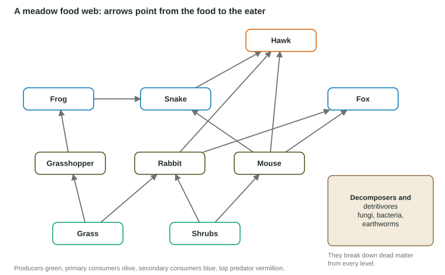

Food Chains and Food Webs
A food chain follows one path of energy from producers to top consumers; a food web shows all the overlapping chains in an ecosystem.
Part 1 · Hook
Why this matters
Part 2 · Before you start
What this builds on
Part 3 · Prerequisite check
Quick check before you start
1. About what share of energy passes from one trophic level to the next?
- About 10%
- About 50%
- About 90%
- All of it
Show the answer
The 10% rule.
- Correct: About 10%:
- About 50%:
- About 90%:
- All of it:
2. What is a primary consumer?
- An organism that eats producers
- A producer
- An apex predator
- A decomposer
Show the answer
Primary consumers (herbivores) eat producers.
- Correct: An organism that eats producers:
- A producer:
- An apex predator:
- A decomposer:
Part 4 · See it
See it first

Part 5 · Step by step
How it works, step by step
- Most organisms eat several foods and are eaten by several predatorsfood chains link into a food web
- A species declinesits predators switch to other prey, and its prey increase
- Changes pass along the linksspecies two or three steps away can change too
Part 6 · Key ideas
Key ideas
- A food chain is one path of who eats whom; a food web is all the linked chains in an ecosystem.
- Arrows point from food to eater, the way energy and matter move.
- Decomposers and detritivores break down dead matter from every level and return nutrients to producers.
- Webs with many links are usually more stable: consumers can switch food when one species declines.
Part 7 · Misconception
A common mistake
The wrong idea: Removing a predator only affects the species it eats.
What actually happens: Effects spread through the web. Fewer predators means more of their prey, which then eat more of their own food: a change can reach producers two or three links away.
Part 8 · Check yourself
Check yourself
Exam-style questions. Anything you miss goes into your review queue.
1. A predator is removed and its prey, a plant-eater, multiplies. Which change is most likely next?
- The plants it eats decline.
- The plants it eats increase.
- The plant-eater declines at once.
- Decomposers disappear.
Show the answer
More plant-eaters eat more plants, so plants decline: an effect that cascades two levels down from the predator.
- Correct: The plants it eats decline.: Right: more grazing means fewer plants.
- The plants it eats increase.: More plant-eaters means more plants eaten, not more plants.
- The plant-eater declines at once.: With no predator, the plant-eater grows at first.
- Decomposers disappear.: Decomposers are not directly affected.
2. Grass → rabbit → fox. If a drought kills much of the grass, which change comes first?
- Rabbits have less food and decline.
- Foxes increase.
- Grass increases.
- Rabbits increase.
Show the answer
The rabbits eat the grass directly, so they feel the loss first; the foxes feel it later, as rabbits decline.
- Correct: Rabbits have less food and decline.: Right: the grass-eaters lose food first.
- Foxes increase.: Foxes have fewer rabbits to eat, so they would not increase.
- Grass increases.: The drought reduces the grass.
- Rabbits increase.: Less grass supports fewer rabbits.
Model or diagram
A meadow food web
3. In the food web, which organisms eat the mouse?
- Snake, fox and hawk
- Frog and grasshopper
- Rabbit, fox and hawk
- Grass and shrubs
Show the answer
Arrows from the mouse point to the snake, the fox and the hawk.
- Correct: Snake, fox and hawk: Right: three predators eat mice.
- Frog and grasshopper: Frogs eat grasshoppers; grasshoppers eat grass.
- Rabbit, fox and hawk: Rabbits eat plants, so they do not eat mice.
- Grass and shrubs: Grass and shrubs are producers.
4. If a disease wiped out the frogs, which population would most likely increase first?
- Grasshoppers
- Snakes
- Hawks
- Shrubs
Show the answer
Frogs eat grasshoppers; without frogs, fewer grasshoppers are eaten.
- Correct: Grasshoppers: Right: the frogs’ prey increases.
- Snakes: Snakes lose a food source, so they would not increase.
- Hawks: Hawks are not directly helped.
- Shrubs: Shrubs are not eaten by frogs or grasshoppers in this web.
5. At which trophic levels does the hawk feed in this web?
- Levels 3, 4 and 5
- Level 2 alone
- Levels 1 and 2
- Levels 3 and 4 only
Show the answer
Rabbits and mice are primary consumers, so eating them puts the hawk at level 3. A snake that ate a mouse is at level 3, so eating it puts the hawk at level 4. A snake that ate a frog (grass → grasshopper → frog → snake) is at level 4, so eating it puts the hawk at level 5.
- Correct: Levels 3, 4 and 5: Right: three levels, through rabbits and mice, and through snakes fed on mice or on frogs.
- Level 2 alone: Level 2 is plant-eaters; the hawk eats animals.
- Levels 1 and 2: Hawks do not eat plants, and they are not plant-eaters.
- Levels 3 and 4 only: Levels 3 and 4 miss the longest chain: grass → grasshopper → frog → snake → hawk puts the hawk at level 5.
Passage
Sea otters and kelp forests
Along parts of the North Pacific coast, sea otters were hunted almost to extinction for their fur in the 1700s and 1800s. Where otters disappeared, sea urchins, which graze on kelp, became very numerous, and many kelp forests were reduced to bare rock called "urchin barrens." Where otters were protected and returned, urchins became scarce and kelp grew back, along with the many fish that shelter in kelp. Ecologists use this as an example of how one predator can shape a whole community, though they note that storms, water temperature and urchin disease also affect kelp.
Invented passage for practice, summarizing widely reported ecology of North Pacific kelp forests.
6. What is the main claim of the passage?
- Otters protect kelp by eating urchins.
- Sea urchins are the main predators of sea otters.
- Storms are the one real cause of urchin barrens.
- Kelp forests grow best where there are no fish.
Show the answer
Where otters returned, urchins declined and kelp regrew; the passage presents otters as shaping the community.
- Correct: Otters protect kelp by eating urchins.: Right: otters indirectly protect kelp.
- Sea urchins are the main predators of sea otters.: Otters eat urchins, not the reverse.
- Storms are the one real cause of urchin barrens.: The passage lists storms as one factor among others.
- Kelp forests grow best where there are no fish.: Fish shelter in kelp; nothing says kelp grows best without them.
7. Which evidence in the passage best supports the claim?
- Kelp regrew where otters returned.
- Otters were hunted for their fur.
- Many fish shelter in the kelp.
- Sea urchins graze on the kelp.
Show the answer
The before-and-after contrast (otters gone, kelp lost; otters back, kelp regrows) is the evidence that links otters to kelp.
- Correct: Kelp regrew where otters returned.: Right: the comparison links otters to kelp.
- Otters were hunted for their fur.: That explains why otters disappeared, not their effect.
- Many fish shelter in the kelp.: That is a result of kelp, not evidence of the otter effect.
- Sea urchins graze on the kelp.: That is part of the mechanism, not evidence that otters matter.
Part 9 · Summary
Summary
Part 10 · Up next
What comes next
Part 11 · Connections